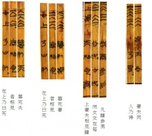

13 同人卦 天火同人
同人于野，亨。利涉大川，利君子貞。初九，同人于門，无咎。六二，同人于宗，吝。九三，伏戎于莽，升其高陵，三歲不興。九四，乘其墉，弗克攻，吉。九五，同人，先號咷而後笑，大師克相遇。上九，同人于郊，无悔。
【卦名】
今本：同人 帛書：同人 歸藏：同人 秦簡：同人 清華簡：同人 海昏：同人
「同人」的「同」原本為與人相見、合會之義，現今則多引申作相同、和同。
傳統以「同人」為「和同於人」，或「與人相同」，如王弼說的大同、大通，孔穎達疏：「同人，謂和同於人。」鄭玄：「猶人君在上施政教，使天下之人和同而事之。以是為人和同者。」至宋明儒則皆以與人相同解釋同人，並加入了「大同」的概念。如程頤：「世之方否，必與人同，力乃能濟。」「夫同人者，以天下大同之道，則聖賢大公之心也。」朱熹：「通天下之志，乃為大同；不然，則是私情之合而已。」
《說文》：「同，合會也。」「同人」即「與人合會」，也就是與人見面的意思。例如「同人於門」即是於門口或門外合會，「同人於郊」即與人於郊外見面。
清華簡《筮法》中經常可見「相見」之象，如「妻夫相見」、「相見在上」，為左上和右上分別為「坤-乾」或「兌-艮」、「離-坎」、「巽-震」。另又有「金木相見」、「水火相見」之象。在《筮法‧得》又有「妻夫同人，乃得」，卦象為左上為坤右上為乾，這也是「妻夫相見」之象，由此可見，「同人」即「相見」的另一說法。（參考左圖）
{kind=link}
具體來說，「同人」卦講的應該就是《周禮》的「朝覲會同」，也就是周王會見諸侯之禮。
《周禮》大宗伯：「以賓禮親邦國。春見曰朝，夏見曰宗，秋見曰覲，冬見曰遇，時見曰會，殷見曰同。」「以賓禮親邦國」即《雜卦》說的｢同人，親也｣。鄭玄注：
時見者，言無常期。諸侯有不順服者，王將有征討之事，則既朝覲，王為壇於國外，合諸侯而命事焉。《春秋傳》曰「有事而會，不協而盟」是也。殷猶眾也。十二歲王如不巡守，則六服盡朝，朝禮既畢，王亦為壇，合諸侯以命政焉。所命之政，如王巡守。殷見，四方四時分來，終歲則徧。
狹義來說，「同」指的是「殷見」之禮，廣義的說，這六種周王與諸侯的相見之禮都謂之「同」，故同人卦六二有「同人于宗」，此當與「夏見曰宗」有關。而「同人於野」、「同人於郊」則是鄭玄說的「則既朝覲，王為壇於國外，合諸侯而命事焉」。
朝宗覲遇為周王在春夏秋冬四季會見諸侯之禮的名稱，《周禮》與《禮記》中經常簡稱為「朝覲」，這是舉「春秋」兩季來代表四季。通常朝覲是為了「會同」而來，並依來見周天子的季節不同而有不同的稱呼。朝覲完之後再開始「會同」之禮。
「會同」則是周王會見順服的諸侯以商討如何討伐不順服者，通常是在朝宗覲遇之後在國外設壇，會見諸侯並分配任務，但亦有於國內會見者。
「會」與「同」的差別，「會」是不定期的會見，「有事則會，不協而盟」，只要有事就會見，有不協調的事就盟會。「有事」指的是「征討之事」。而「同」則是定期的會見，每十二年周王要巡守一次，但如果因為有事（征伐之事）而不能巡守，那麼就改為「同」，也就是四方諸侯依四季分別前來，如東方諸侯春季而來，南方諸侯夏季，西方諸侯秋季，北方諸侯冬季，如此一年結束時也就相當於見過四方諸侯。
由此可見，會同在於會見與拉攏順從的諸侯以征討不服於周王的諸侯，這也是《象傳》說的「君子以類族辨物」。由於「會同」往往都是因為征伐的軍事理由，因此在《周禮》中「會同」經常是與「軍旅」、「師役」並稱，這也是為何同人卦爻辭中多次出現征伐情節的原因。
【卦義】
與人相見、合會、會見。
「同人」卦傳統解釋為與人和同、與人相同的意思，並以「大同」、大公無私等觀念來會通卦義。但同人卦典故與原義當指周天子會見諸侯，以表和同、親近之意。
「同人」的卦象傳統上有兩種看法，一是就天與火之卦象來看。火性炎上，離火自下炎上而與天同。如鄭玄：「乾為天，離為火。卦體有巽，巽為風。天在上，火炎上而從之，是其性同於天也。火得風，然後炎上益熾，是猶人君在上施政教，使天下之人和同而事之。」程頤：｢天在上者也，火之性炎上，與天同也，故為同人。｣來知德：｢同人者，與人同也。天在上，火性炎上，上與天同，同人之象也。｣或者以離為日，與天同光，如《九家易》：「天日同明，以照于下。君子則之，上下則之，故曰同人。」
二則是以九五和六二兩爻的中正相應而言，如崔憬：「以離文明，而合乾健。九五中正，同人於二，為能通天下之志，故能利涉大川，利君子之貞。」 來知德：「二五皆居正位，以中正相同，同人之義也。」朱震則講得相當迂迴：「乾，天也，曰同人，何也？三畫以初為地，以二為人，三為天，重卦四即初也，五即二也，上即三也，六二應乎九五，同人也。」
實則同人卦取象是以離為公為諸侯，乾為天子，同人為諸侯覲見天子之象，亦即《周禮》所說的「春見曰朝，夏見曰宗、秋見曰覲，冬見曰遇。時見曰會，殷見曰同」的朝覲會同之禮。
歷代易學家皆以震為公為諸侯，但觀《左傳．僖公二十五年》晉文公筮救周襄王得「大有之睽」，卜偃解釋說：「是卦也，天為澤以當日，天子降心以逆公。」顯然這是以乾為天子，互體澤悅為降心，上卦離為公（諸侯）。「天子降心」講的是乾天在下爻變為悅。而「逆公」，則是指較為尊貴的天子反居於諸侯之下迎接晉文公，也就是離上乾下的卦象。大有的離上乾下為天子以逆公（諸侯），那麼反過來的同人卦則為諸侯覲見天子。
再以《周易》經文證之可發現，取公、侯的卦象有兩個：一是震，一是離。離之卦例如大有九三「公用亨于天子，小人弗克」，鼎九四「覆公餗」。再比較兩者差異，離為戈兵，因此離之為公侯往往是具有兵戎者。再看同人卦，上乾天子之見下離公侯，乃是以戈兵之事而相見者，而爻辭中從九三、九四，到九五，甚至直接講的就是兵戎之事。
卦序上，《易經》走到泰否已成一個興衰循環，泰是一個太平盛世，至否卦則是由盛轉衰，世局混亂，小人道長，君子道消，天下閉塞。從否轉至同人卦則是上下會同，天子見諸侯以解決動亂。會同則事可通，《序卦》傳說：「物不可以終否，故受之以同人。」
與同人旁通的師卦為興師動眾，討伐不義，和同人有相通之處。一是聚眾興師（師卦），一是會見諸侯。
得同人卦者，凡事必需認清敵友親疏，並以外求他人相助為宜。
同人于野，亨，利涉大川，利君子貞。
- 彖曰：同人，柔得位得中而應乎乾，曰同人。同人曰，同人于野，亨，利涉大川，乾行也。文明以健，中正而應，君子正也，唯君子為能通天下之志。
- 象曰：天與火，同人。君子以類族辨物。
- 序卦：物不可以終否，故受之以同人。與人同者物必歸焉，故受之以大有。
- 雜卦：同人，親也。
【今解】
與人會見於野外，亨通。利於涉水過大河，可以涉險。利於君子的貞定。
此指周王設壇於城外與諸侯行會同之禮，即見面商討如何征伐不順服的諸侯。
同人卦是乾與坤旁通而來，乾九二至坤五，乾體變成同人，坤體變成比卦。同人於野、利涉大川講的都是乾卦九二至坤五成比卦九五。九二至九五多功之位，為眾所親比，為比卦上體坎中，坎為大川。五為郊野之位。
野象徵心胸寬大，有如曠野。
【字義】
同人于野：原意為在野外與人會見。《周禮》朝覲會同之禮鄭注：「諸侯有不順服者，王將有征討之事，則既朝覲，王為壇於國外，合諸侯而命事焉。」「同人」講的是會同之禮，即周王會見順服的諸侯共同商討如何討伐不順服者。諸侯來朝覲之後，周王設壇於國外以合會諸侯，分配任務。野即是國外。城外叫做郊，郊外叫做野。所以野是比郊外離城更遠的地方，這也是國外的地方。傳統解釋為與人和同於曠野，比喻心胸寬闊，大公無私。孔穎達：「野是廣遠之處，借其野名，喻其廣遠，言和同於人，必須寬廣，无所不同。」程頤：「野，謂曠野，取遠與外之義。夫同人者，以天下大同之道，則聖賢大公之心也…于郊野曠遠之地，既不繫所私，乃至公大同之道，无遠不同也，其亨可知。」虞翻以乾為野：「旁通師卦。巽為同，乾為野。師震為人。二得中應乾，故曰同人於野亨。」侯果以升降理論解釋：「九二升上，上為郊野，是同人于野而得通者，由乾爻上行耳。故特曰乾行也。 」
利涉大川：宜於涉水過大川，比喻得以行險，討伐不順服的諸侯即行險。涉，涉水，徒步走過水。水深過膝徒步走過就是「涉」。《說文》：「徒行厲水也。」段注：「濿各本作厲，誤。濿或砅字也，砅本履石渡水之偁，引伸為凡渡水之偁。《釋水》曰：繇膝以上為涉。《毛傳》同。許云徒行者，以別於以車及方之、舟之也。許意詩所言揭厲皆徒行也，皆涉也，故字从步。」同人卦沒有坎象為何說利涉大川？此大川之象在比卦。同人卦之六二怎麼來的？乾卦九二跑到坤卦裡面，坤卦變成了比卦，因此同人乃乾坤旁通而來，九二乾行成比卦九五坎中又居多功之位，群眾親比，因此利涉大川，同人于野。
君子以類族辨物：君子以善待族人，分辨明察事物。類兼具二義，一是類別、同類。二是善。《爾雅·釋詁》：「類，善也。」《詩·大雅》：「克明克類。」虞翻：「謂方以類聚，物以群分。孔子曰：君子和而不同，故於同人象見，以類族辯物也。」
初九，同人于門，无咎。
象曰：出門同人，又誰咎也。
【今解】
與人會面於門內，沒有罪咎。
經文說「同人于門」，《象傳》則說「出門同人」，顯然與經文並不一致。傳統註解皆遵循象傳，解釋為出門與人和同。經文雖未說門內、門下，或門外，但初九為門內之位，因此理應是在門內會面，而不是出門會面。此句意思是宜於在門內會面，則可得無咎。不宜在門外與人會面。
另解，此門或者指旌門，指天子與諸侯會同於旌門。
初九動，下卦成艮，艮為門闕，初處門之下位，故曰「同人於門」。
同人于門：字面意思為與人會面於門，此當指周王與諸侯會見於旌門之事。《司常》云：「會同賓客，置旌門。」古時周王會同諸侯有如軍禮，天子設壇於國外，駐點休息時「張帷為宮，則樹旌以表門」。傳統皆依 《象傳》解釋為出門與人和同，如王弼：「居同人之始，為同人之首者也。无應於上，心无係吝，通夫大同，出門皆同。」程頤：「出門同人。出門，謂在外。在外則无私昵之偏，其同博而公，如此則无過咎也。」
六二，同人于宗，吝。
- 象曰：同人于宗，吝道也。
- 二三子：同人于宗，貞藺。孔子曰：「此言亓所同唯亓室人，而…故曰貞藺。」
【今解】
夏宗之禮上行會同之禮，有悔恨。
六二為離卦之主，離為夏，六二應九五為見，夏見之象。夏見曰宗，故曰「同人於宗」。
傳統解釋為與自己同宗族的人和同，這是吝嗇之道。帛書易傳《二三子》引孔子，亦作此解：「其所同唯其室人。」此指六二只與九五相應，意味用心偏狹而只與自己同宗之人（九五）和同，為吝嗇之道。六二原本為同人卦的主爻，但只與九五和同，因此而與中間的九三、九四兵戎相見（見九三九四爻辭）。反之，若能放大視野，而能與眾人皆和同，則可亨通。
《五經異義》引《易》曰「同人於宗吝」：「言同姓相娶吝道也。」
【字義】
同人於宗：《周禮》「夏見曰宗」，宗為夏見之禮。諸侯若有不順服者，周王會與其他順服的諸侯行會同之禮，以商討征伐之事。諸侯與周王會同之前，會先行「朝覲」之禮，朝覲之後設壇於國外行會同之禮。具體而言，「春見曰朝，夏見曰宗，秋見曰覲，冬見曰遇」。「朝覲」是取「春秋」而言一年四季，實則包括了夏之宗與冬之遇。同人於宗，或指於宗禮上即進行會同之事。宗本義為宗廟，《說文》：「尊祖廟也。从宀从示。」宗由宗廟引申為宗族、宗室，宗主。傳統上「同人於宗」則有三種解釋。一是合會於宗廟。二，以宗為宗主，三是以宗為宗族。侯果以宗為眾：「宗，謂五也。二為同人之主，和同者之所仰也。有應在五，唯同於五，過五則否，不能大同於人，則為主之德吝狹矣。所同雖吝，亦妻臣之道也。 」
九三，伏戎于莽，升其高陵，三歲不興。
象曰：伏戎于莽，敵剛也；三歲不興，安行也。
【今解】
埋伏於草木叢裡，登高到高地上。三年都無法興兵動武。
此段言敵人強大，因此伏兵於草叢間觀其虛實，等待時機。後又爬到高地上，希望對全局有更好的掌控，仍然一無所獲。最後三年時間都無法興兵攻敵。
象曰：「伏戎于莽，敵剛也。」此解釋埋伏於草叢間是因敵人太強。剛為強。
「會同」本是周天子找來順服的諸侯以征伐不順服者。九三居離之上，離為戈兵，因此為動武之象。巽為草木為莽，離在巽下為伏戎於莽之象。三多凶，爻動下體成震為起，但互體艮山擋之，為不興。艮為高陵，震為起，故曰升其高陵。
【字義】
伏戎於莽：埋伏於草木叢裡，準備偷襲他人。戎為兵器，引申為兵。莽為草木叢。
升其高陵：登上高地，以取得居高臨下的地利之便。古升同登。帛書作登。
三歲不興：等待攻擊對方的機會，但一直等待不著。三歲喻多年，很久，並不一定指三年。《周易》中關於三年或稱「三年」，或稱「三歲」。若言「三年」者，則事可成，如既濟九三「高宗伐鬼方，三年克之」，未濟九四「震用伐鬼方，三年有賞于大國」。稱「三歲」者則事不可成，或為凶，如坎上六「三歲不得，凶」，困初六「臀困于株木，入于幽谷，三歲不覿」，漸九五「鴻漸于陵，婦三歲不孕」，豐上六「三歲不覿，凶」。至於十年者則無此別，皆曰「十年」，多數偏凶，如屯卦六二「女子貞不字，十年乃字」，復上六「至于十年不克征」，頤六三「十年勿用，无攸利」。為何「三年」與「三歲」會有吉凶上的差別？《爾雅》：「載，歲也。夏曰歲，商曰祀，周曰年，唐虞曰載。」夏習慣稱歲，周習慣稱年，此說不能解釋《周易》為何以三年為吉，三歲為凶。《說文》：「穀孰也，从禾千聲。《春秋傳》曰：大有年。」「歲，木星也，越歷二十八宿，宣徧陰陽，十二月一次。从步戌聲。《律曆書名》：五星為五步。」年原本是指每年的五穀成熟，而歲則是木星，木星大致上每十二年繞太陽一周，因此用以紀年，並可與十二地支系統相接。「三歲」在《詩經》出現六次，〈氓〉「自我徂爾，三歲食貧」、「三歲為婦，靡室勞矣」，〈采葛〉「彼采艾兮，一日不見，如三歲兮」，〈碩鼠〉「三歲貫女，莫我肯顧」、「三歲貫女，莫我肯德」，「三歲貫女，莫我肯勞」。「三年」則只有〈東山〉「自我不見，于今三年」一次。但是「年」字經常用作代表吉祥的「萬年」。似乎年與歲在《詩經》中也有吉凶的不同象徵。
九四，乘其墉，弗克攻。吉。
象曰：乘其墉，義弗克也。其吉，則困而反則也。
【今解】
修築城牆，讓敵人攻打不下。吉。
傳統註解為，登上其城牆，但未能攻下，因為義理上不能攻下。以兵法來說，登牆而未攻下，或許可解釋為「圍點打援」戰術的運用。
項安世以九居陰位為不克之象：「凡爻言不克者，皆陽居陰位。惟其陽，故有訟有攻。惟其陰，故不克訟、弗克攻。訟之九二、九四，同人之九四，皆是物也。」此說不正確，蒙九二子克家，大有九三小人弗克，復上六不克征，損六五益六二弗克違，都是反例。
【字義】
乘其墉，弗克攻：乘，治也，《詩．七月》「亟其乘屋」，鄭玄：「乘，治也。」治屋即修築屋廬。墉，牆，城牆。乘其墉，修築城牆，加強防護之義。加強防護而讓敵人攻打不下，因此為吉。承上爻，九三言敵強我弱，因此伏戎於莽，三年不興。此言加強防護則可得而吉。承上爻，九三明言敵強我弱，因此伏戎於莽，三歲不興。此言加強防護則可得而吉。傳統將「乘其墉」解釋為登上城牆，於文義不甚通順，因敵人既已登上城牆，理論上應該已幾乎被攻下，又說「弗克攻」，也就是攻打不下，相當奇怪。因此解釋者多以《象傳》「乘其墉，義弗克也」、「其吉，則困而反則也」解釋為道義上讓他未攻下，或意指攻城者最後一刻良心發現。如王弼：「故乘上高墉，欲攻三也。弗克攻吉者，三欲求二，其事已非。四又效之，以求其二，違義傷理，眾所不與，雖復乘墉，不能攻三也。吉者，既不能攻三，能反自思愆，以從法則，故得吉也。」虞翻：「巽為墉，四在巽上，故乘其墉。」程頤：「以邪攻正，義不勝也。其所以得吉者，由其義不勝，困窮而反於法則也。」聞一多以乘為增。《周易義證類纂》：「乘猶增也。《淮南子．氾論篇》注曰：『乘，加也。』《廣雅．釋詁二》曰：『增，加也。』乘增聲類同。《詩．七月》『亟其乘屋』，乘亦訓增，謂增加其屋之苫蓋…『乘其墉，弗克攻』謂增其城墉，使敵來不能攻，故為吉占。」
九五，同人，先號咷而後笑，大師克，相遇。
象曰：同人之先，以中直也；大師相遇，言相克也。
《繫辭》：同人「先號咷而後笑」，子曰：「君子之道，或出或處，或默或語。二人同心，其利斷金，同心之言，其臭如蘭。」
【今解】
會同之前驚恐而痛哭，後因有轉機而大笑。大軍將敵人打敗，終於雙方相遇。
會同的原因原本就是為了要征伐不順服的諸侯，因此會同之先「先號咷」，因遇諸侯反叛。而後笑者，會同是拉攏所親密的諸侯，諸侯來會同，大師得以會合。
六二雖為同人卦主爻，但在會同當中九五才是真正的會同之主，也就是周天子。九三九四兩爻講的是不順服之諸侯來犯，九五因陽剛中正，所以有能力以強勢的手段來弭平。
「二人同心，其利斷金」，「同心之言，其臭如蘭」，典故即出自《繫辭》中引述孔子對同人卦九五爻的說明。
【字義】
號咷：形容痛哭之狀。號，音豪，大聲叫喊。咷，音逃，哭聲。
大師克相遇：大軍獲勝，終於相遇。應讀為「大師克，相遇」，大師為大軍，詳見師卦說明。克為獲勝，大師克為大軍獲勝。九五與六二會同，是因為有九三及九四的叛亂，「大師克，相遇」指大軍攻打而獲勝，兩邊盟軍得以相遇。
上九，同人于郊，无悔。
象曰：同人于郊，志未得也。
【今解】
在郊外與人會合，無所後悔。
郊與野原本有離城遠近之別，但都意指城外。依《周禮》，會同是在朝覲之後於國外設壇為之，因此郊與野都是「國外」的不同說法。上六最處卦外，爻位為「郊」。
傳統解釋以「郊」喻人之置身事外。同人卦中，其他四陽爭一陰（六二），唯獨上九是完全置身事外者。上九雖想置身事外，又得與人和同，所以像是群體中與人格格不入者，因此象曰：「同人于郊，志未得也。」言獨善其身之志向未能實現。王弼：「郊者，外之極也。處同人之時，最在於外，不獲同志，而遠於內爭，故雖无悔吝，亦未得其志。」侯果曰：「獨處于外，同人於郊也。不與內爭，无悔吝也。同人之時，唯同于郊，志未得也。」朱熹：「郊，在野之內，未至於曠遠，但荒僻无與同耳。」
【彖傳注】
柔得位得中而應乎乾，曰同人：以主爻六二解釋同人卦。六二當位，故曰得位。六二亦是下卦離之主爻，與上面乾卦的九五爻相應，故曰應乎乾。
同人曰，同人于野，亨，利涉大川，乾行也：此以旁通解釋經文。同人卦是乾坤旁通而來，乾卦九二至坤五，成同人與比。乾卦九二至坤五即「乾行」，乾行成比卦上坎，坎為大川，坎在外為剛健而不陷，因此曰利涉大川。乾九二至坤五，五為野，坤為眾人，五又多功。君子與眾人會見於野，故曰同人于野。朱熹認為「同人曰」三字衍文。蜀才認為同人是夬卦卦變而來：「此本夬卦。九二升上，上六降二，則柔得位得中，而應乎乾。」
文明以健：以上下二體的卦德解釋同人。內離為文明，外乾為剛健。何妥：「離為文明，乾為剛健。健非尚武，乃以文明。應不以邪，乃以中正。故曰利君子貞也。」
中正而應，君子正也：六二為同人卦成卦之主爻，九五為治卦之主爻，兩爻相應且都有中正之德。九五及六二皆居中而當位，故曰中正。乾為君子，九五中正，君子正之象。
唯君子為能通天下之志：九五與六二相應。或者指乾坤旁通，乾九二至坤五，為通天下志。
堪误
“九二雖為同人卦卦主，但在會同當中九五才是真正的會同之主……”中“九二”应为“六二”。
感謝幫忙堪誤
為節省系統資源，在此把以前的還有往後的，都一次謝過！
感謝discboy兄這麼用心閱讀，協助堪誤。
內文已修正
不敢當
站長你做的事堪稱功德無量，在下在這裡學到不少知識，正所謂飲水思源，應該的。
“三年不興：等待攻擊對方的機會”应为“三歲不興”。
“三年不興：等待攻擊對方的機會”应为“三歲不興”。